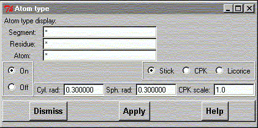

**************************************************************************
Atom type mask widget
Leif Laaksonen CSC 1996
**************************************************************************
Choose atom display type by selecting the atoms. Choose from the three different display types:
Choose or select the atoms by writing the name(s)/number(s) of the segment(s), resudue(s) and atom(s) you want to apply the display type on.
For the licorice display mode it's also possible to define the cylinder diameter and sphere radius. In the CPK display mode it's also possible to scale the CPK sphere with a constant. By default the vDW value is used and the scaling constant is 1.0.
It is possible to turn the various display modes on and off using the "On" and "Off" buttons.
To apply the selection press the "Apply" button.

Line command: see atom command
**************************************************************************
LUL/1999
**************************************************************************